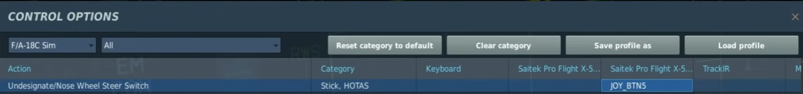
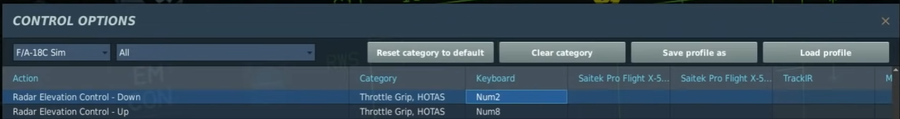
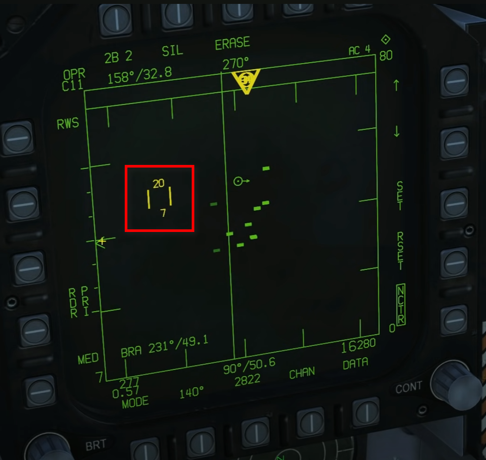
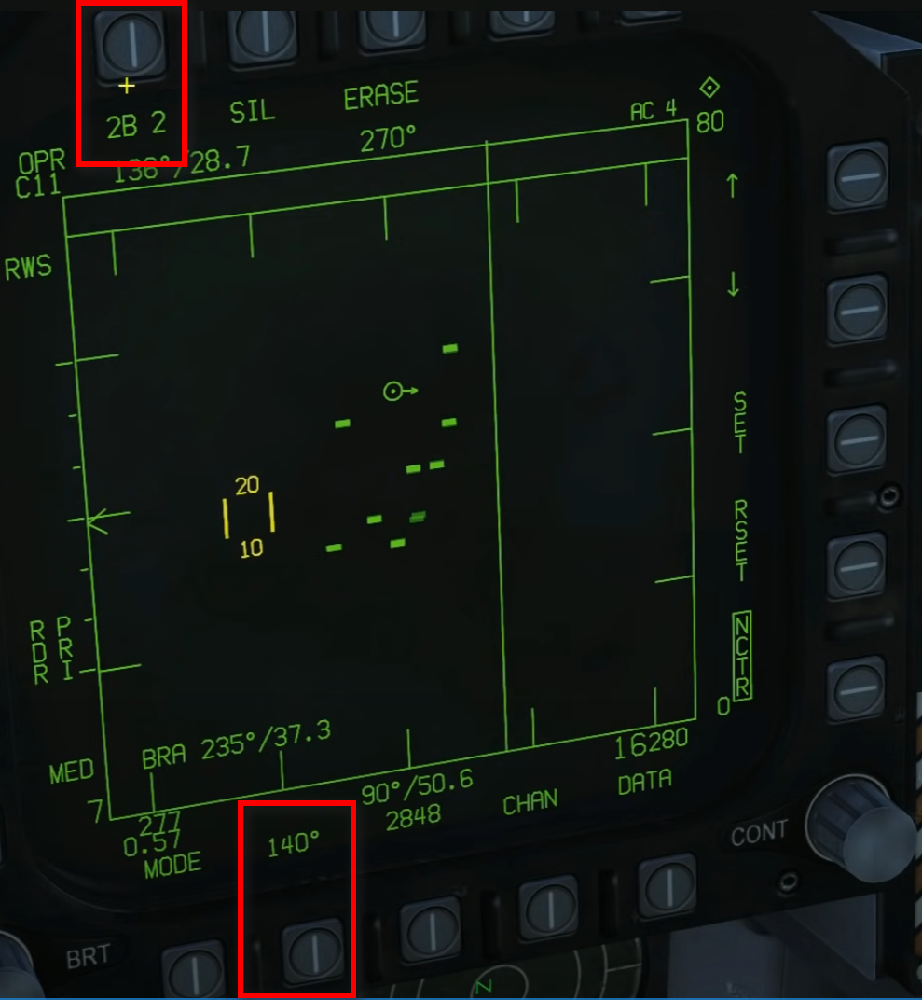
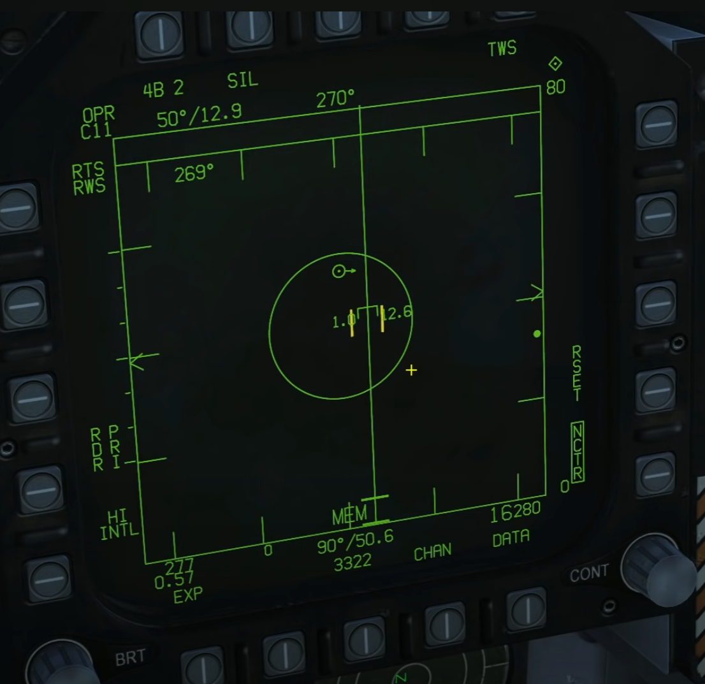
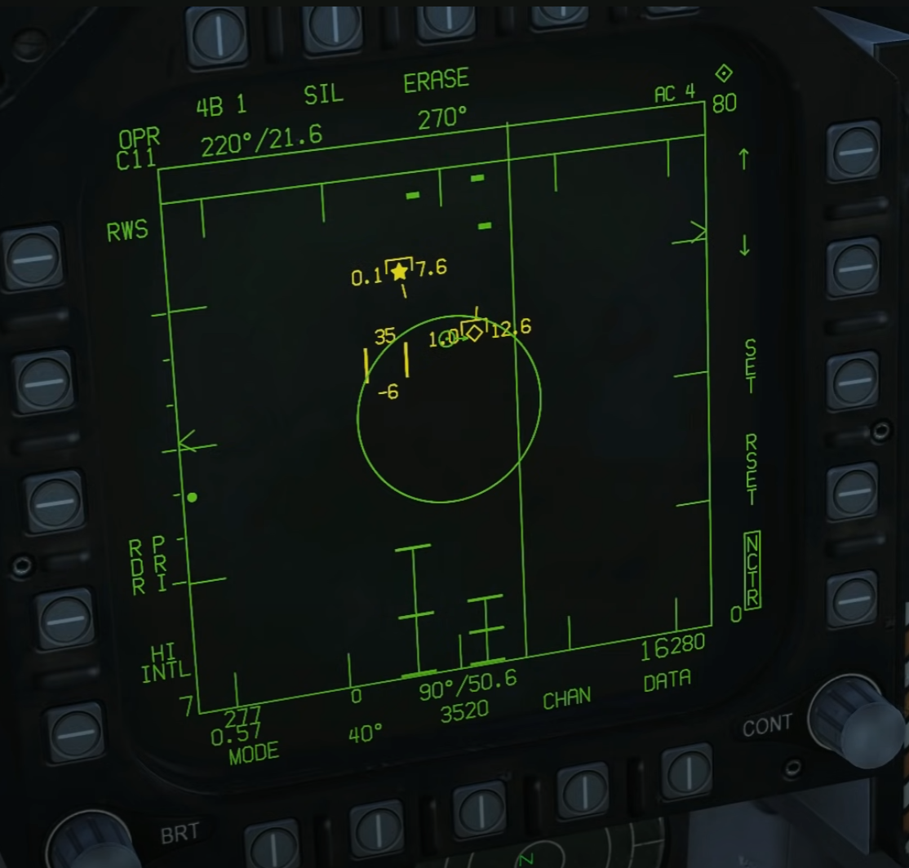
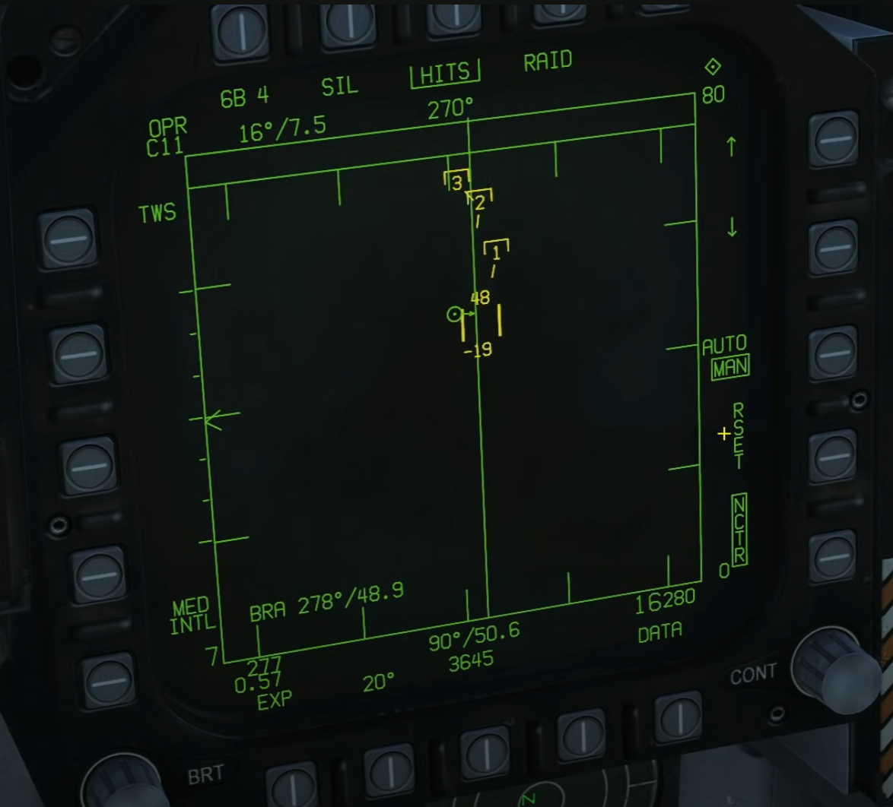

Chart In General
Key Bindings


TDC Range
- At Top + 20 k feet
- At Bottom + 7 k feet

Change Elevation Coverage of Radar
2B 1: Remember 1 Bar is About 1.3 Degrees.

Three BVR Modes:
RWS - incl. STT (L&S)(Support For AIM-7 & AIM-120)

RWS + LTWS (Tracks)
- VIEW TRACK FILE (No Fire Support)
- L&S TRACK FILE (No Fire Support) STAR
- DT2 TRACK FILE (No Fire Support) DIAMOND

TWS
- incl. STT (L&S)(Support For AIM-7 & AIM-120)
- or
- VIEW TRACK FILE (No Fire Support)
- L&S TRACK FILE (Support For AIM-120) STAR
- DT2 TRACK FILE (Support For AIM-120) DIAMOND

Source
From 6:16, it's about departure procedure